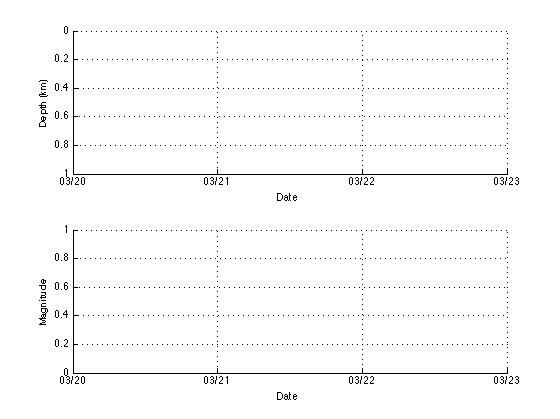
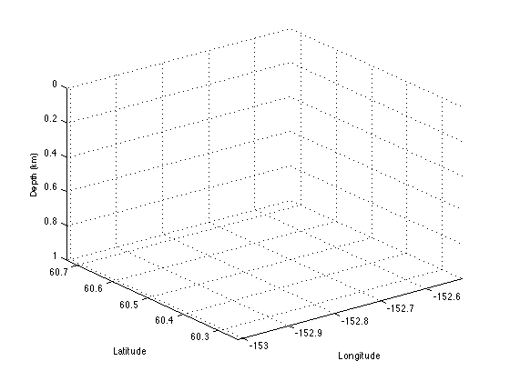

CATALOG and EVENTRATE cookbook
Contents
Introduction
This is a short demonstration of some of the methods of the CATALOG and EVENTRATE classes.
It is assumed that you already have GISMO on your MATLAB path.
This cookbook is written as an M-file and is converted to HTML using the PUBLISH command.
Author: Glenn Thompson, Geophysical Institute, Univ. of Alaska Fairbanks
Loading event catalogs
The catalog class is for loading, plotting and analysing event catalogs. For a detailed description, read HELP CATALOG.M.
For the purpose of this exercise we will be using data from Redoubt volcano from 2009/03/20 to 2009/03/23. We will use two catalogs:
- The real-time catalog, produced using Antelope (rtdb200903).
- The analyst-reviewed offical AVO catalog (avodb200903), produced using Earthworm, XPick and Hypoellipse, later converted to an Antelope database.
Both catalog segments are distributed in the "demo" directory.
We will now load the real-time catalog into a catalog object. First, because we don't know where GISMO is on your system, we have to construct the path to the demo directory based on where CATALOG.M resides:
dirname = fileparts(which('Catalog')); dbpath = [dirname,'/demo/avodb200903']; % Now read the events into a Catalog object. Only two parameters are % needed, the database path (dbpath) and the data format ('antelope'): cobj = readEvents('datascope', 'dbpath', dbpath); % This should load 1441 events. What if we only want events within 15km of % Redoubt volcano? The parameter-value pair 'dbeval' can be used, with an % appropriate Datascope expression, e.g. cobj = readEvents('datascope', 'dbpath', dbpath, 'dbeval', ... 'deg2km(distance(lat, lon, 60.4853, -152.7431))<15.0'); % where 60.4853 is the latitude of Redoubt and -152.7431 is the longitude. % Now there should only be 1397 events.
Loading data from /Users/thompsong/run_tremor/GISMO/event/demo/avodb200903 Success: 1441 rows Got 1441 records from /Users/thompsong/run_tremor/GISMO/event/demo/avodb200903.origin Success: 1441 rows Got 1441 records after joining event with /Users/thompsong/run_tremor/GISMO/event/demo/avodb200903.origin Got 1441 records after subsetting with orid==prefor Got 1441 prefors prior to subsetting Loading data from /Users/thompsong/run_tremor/GISMO/event/demo/avodb200903 Success: 1441 rows Got 1441 records from /Users/thompsong/run_tremor/GISMO/event/demo/avodb200903.origin Success: 1441 rows Got 1441 records after joining event with /Users/thompsong/run_tremor/GISMO/event/demo/avodb200903.origin Got 1441 records after subsetting with orid==prefor Got 1441 prefors prior to subsetting Got 1397 prefors after subsetting
PLOTTING HYPOCENTERS
Magnitude-time plot
You should see that there are 1441 events in these 3 days. What are their depths and magnitudes as a function of time?
cobj.plot_time()
3D-Hypocenters
For a 3D hypocenter map, use plot3:
cobj.plot3()
PLOTTING B-VALUES & ESTIMATING MAGNITUDE OF COMPLETENESS
Code from "ZMap" (written by Stefan Wiemer and others) has been added to Catalog to compute and plot bvalues. Use the bvalue method:
cobj.bvalue() % This will give a menu of techniques available to compute b-value (b) and % magnitude of complteness (Mc) cobj.bvalue(1) % will use technique 1
-------------------------------------------------------- ERROR: Usage is: Catalog.bvalue(mcType). mcType not specified -------------------------------------------------------- mcType can be: 1: Maximum curvature 2: Fixed Mc = minimum magnitude (Mmin) 3: Mc90 (90% probability) 4: Mc95 (95% probability) 5: Best combination (Mc95 - Mc90 - maximum curvature)
Attempted to access xt3(1); index out of bounds because numel(xt3)=0.
Error in Catalog/bvalue (line 695)
mag_hi = xt3(1);
Error in catalog_cookbook (line 64)
cobj.bvalue(1)
PLOTTING EVENT COUNTS & ENERGY RELEASE RATES
For a quick plot of earthquakes per hour, we create an eventrate object and then plot it. Here our binsize is 1/24 days, i.e. 1 hour.
erobj = EventRate(cobj, 1/24) plot(erobj);
Event rates for overlapping time windows
Sometimes it is desirable to compute event rate metrics for sliding - i.e. overlapping - time windows. This is easily done with the 'stepsize' parameter. If omitted, stepsize defaults to the binsize - which is the length of the time window. So in the previous example, both binsize and stepsize were 1.0 hours. But we can just as easily compute an eventrate object for the same catalog object with a binsize of 1 hour, and stepsize of just 5 minutes.
erobj2 = EventRate(cobj, 1/24, 'stepsize', 5/1440)
erobj2.plot()
Plots of other event rate metrics
erobj.plot() is actually equivalent to typing: erobj.plot(), 'metric', 'counts');
The full list of metrics that can be plotted are: * counts * mean_rate * median_rate * cum_mag * mean_mag * median_mag * energy
All of these are properties of an eventrate object except for energy, which is computed from cum_mag on-the-fly.
Several can be plotted at once in subplots of the same figure using a cell array:
plot(erobj2, 'metric', {'mean_rate'; 'median_rate'; 'mean_mag'; 'cum_mag'});
Or they can of course be plotted in separate figure windows:
erobj2.plot('metric', 'mean_rate') erobj2.plot('metric', 'median_rate') erobj2.plot('metric', 'mean_mag') erobj2.plot('metric', 'cum_mag')
These are the same metrics, binsize and stepsize used by the AVO swarm tracking system. See: < http://www.aeic.alaska.edu/input/west/papers/2009_srl_thompson_redoubtSwarms.pdf > for details.